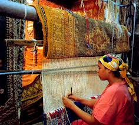
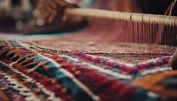
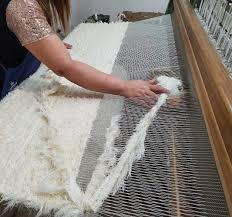
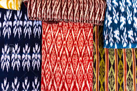
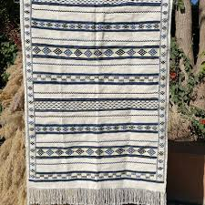
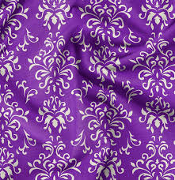
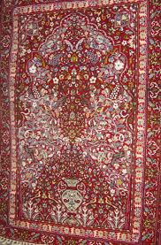
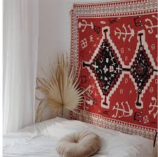
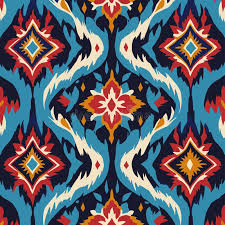

Techniques Avancées de Tissage Marocain
Explorez les méthodes complexes et les savoir-faire ancestraux des maîtres tisserands marocains, gardiens d'une tradition textile riche et variée.
Méthodes de Tissage Avancées

Tissage sur Haute Lisse
Technique verticale ancestrale utilisée pour les tapis de luxe, permettant une grande précision dans les motifs complexes.

Tissage sur Basse Lisse
Méthode horizontale plus rapide, idéale pour les pièces utilitaires tout en conservant la qualité artisanale.

Tissage Filigrané
Art délicat des tissus ajourés, typique de la région de Tétouan, créant des effets de transparence.

Ikat Marocain
Teinture des fils avant tissage pour créer des motifs flous et dégradés, technique rare et précieuse.
Processus Artisanal
Le tissage traditionnel marocain suit des étapes rigoureuses transmises de génération en génération.
Préparation des Matières
Laine cardée, soie ou coton filé à la main, teinture végétale
Montage du Métier
Installation minutieuse de la chaîne selon le motif prévu
Exécution du Motif
Insertion manuelle de la trame selon des schémas complexes
Finitions
Brossage, lavage et coupe des fils pour un rendu parfait
Chefs-d'œuvre du Tissage
Découvrez la diversité des réalisations issues de ces techniques ancestrales






Un Savoir-Faire à Préserver
Les techniques avancées de tissage marocain représentent un patrimoine culturel inestimable. Aujourd'hui, des coopératives féminines et des ateliers artisanaux perpétuent ces méthodes tout en les adaptant aux exigences contemporaines.
Chaque pièce tissée raconte une histoire, porte une symbolique et témoigne du lien profond entre les artisans et leur territoire.